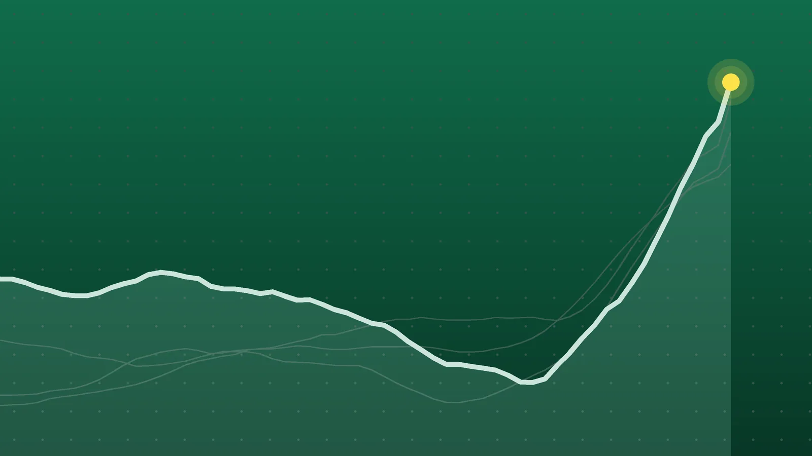

SportsExplainer
NHL Scores, Oct. 24: Nylander Hits 300 as Leafs Rout Oilers 7-2
Four of Saturday’s 12 games went to overtime, home teams won eight, and Nikita Kucherov and William Nylander reached franchise milestones.

Quick take
- William Nylander scored twice, reaching 300 NHL goals, as Toronto beat Edmonton 7-2 for a fourth straight win; Connor McDavid’s point streak reached 11 games.
- Nikita Kucherov became Tampa Bay’s career points leader with 1,138, but Utah rallied to win 5-4 in overtime on Dmitri Simashev’s second goal of the night.
- Pyotr Kochetkov made 24 saves in Carolina’s 4-0 win at St. Louis and is 7-0 in his starts this season.
- Columbus, Pittsburgh, Utah and Washington all won in overtime, and home teams went 8-4 on the night.
Why it's trending The NHL played 12 games on Saturday, Oct. 24, including Toronto’s 7-2 rout in Edmonton and four overtime finishes.
NHL scores for Oct. 24
Toronto went into Edmonton and won 7-2, its fourth victory in a row, and William Nylander’s empty-net goal late in the third period was the 300th of his NHL career. Connor McDavid still extended his season-opening point streak to 11 games with two assists, but the Oilers’ three-game winning run ended, according to NHL.com.
In Salt Lake City, Nikita Kucherov became the Lightning’s all-time points leader, then watched Utah erase a two-goal deficit and win 5-4 in overtime. Four of Saturday’s 12 games needed extra time, none went to a shootout, and all 12 were completed, per the Hockey-Reference scoreboard and CBS Sports.
All final scores
| Winner | Score | Loser | Note |
|---|---|---|---|
| Anaheim Ducks | 5-4 | at Philadelphia Flyers | Ducks erased a 2-0 hole; Leo Carlsson had a goal and an assist |
| Boston Bruins | 6-4 | San Jose Sharks | Four Boston goals in the third; points streak at eight games |
| Columbus Blue Jackets | 2-1 (OT) | Vegas Golden Knights | Adam Fantilli’s power-play goal 59 seconds into OT; Cam Talbot 26 saves |
| Ottawa Senators | 7-4 | New York Rangers | Drake Batherson hat trick; Jonas Johansson won his Ottawa debut |
| New Jersey Devils | 3-1 | Los Angeles Kings | Brett Pesce’s first goal in 35 games broke a 1-1 tie |
| Pittsburgh Penguins | 3-2 (OT) | Nashville Predators | Ville Koivunen won it after Rickard Rakell tied it late in the third |
| Washington Capitals | 4-3 (OT) | Buffalo Sabres | Alex Tuch scored twice against his old team, including the winner |
| Carolina Hurricanes | 4-0 | at St. Louis Blues | Pyotr Kochetkov 24 saves; Joel Hofer stopped 35 |
| Calgary Flames | 4-1 | Detroit Red Wings | Joel Farabee had a goal and two assists; third straight Calgary win |
| Toronto Maple Leafs | 7-2 | at Edmonton Oilers | Nylander 2 goals; Leon Draisaitl scored both for Edmonton |
| Minnesota Wild | 5-1 | at Seattle Kraken | Kirill Kaprizov scored 26 seconds in; Blake Coleman had two |
| Utah Mammoth | 5-4 (OT) | Tampa Bay Lightning | Dmitri Simashev’s first two NHL goals, including the OT winner |
The Columbus and Calgary details come from theScore’s game page and its Flames-Red Wings page.
Leafs pile up seven in Edmonton
Jack Roslovic, who left the Oilers to sign with Toronto in free agency, had a goal and an assist against his former club. Auston Matthews and Troy Stecher scored 54 seconds apart early in the second, and Nylander added a power-play goal just 14 seconds into Toronto’s lone man advantage, the Maple Leafs’ recap said. Zack MacEwen and Vinni Lettieri also scored for a season-high seven.
Anthony Stolarz made 30 saves. Draisaitl scored both Edmonton goals and now leads the league with 12, according to AP. McDavid has 33 points in 11 games, an average of three a night. Nylander moved past Rick Vaive into sixth on the franchise goals list.
Kucherov’s record, Utah’s comeback
Kucherov’s assist on a first-period Brayden Point goal gave him 1,138 career points, one ahead of Steven Stamkos, who had held the Tampa Bay record since April 2022, AP reported. The Lightning led 3-1 in the first and 4-2 in the second.
Utah answered with Anders Lee and then Simashev, who tied it late in the second period. He won it 1:44 into overtime, finishing a 2-on-1 with Barrett Hayton, The Hockey News reported. Those were the first two goals of his NHL career. Tampa Bay was playing for the second night in a row after a 6-3 loss at Colorado on Friday, according to 32 Hockey Updates.
Kochetkov stays perfect
Carolina scored three times in the second period at St. Louis: Sean Walker, Jesperi Kotkaniemi 20 seconds later, then Logan Stankoven on a breakaway. Nikolaj Ehlers added a power-play goal in the third, AP reported. Kochetkov’s 24 saves gave him his first shutout this season and the 12th of his career.
He has won all seven of his starts, the NHL’s longest active win streak, and one more would tie Frederik Andersen’s franchise record for a season-opening run, set in 2021-22, according to NHL.com. The Hurricanes went 3-1-1 on their five-game trip, collecting 7 of 10 possible points, The Hockey Writers noted.
What it means
Home teams went 8-4. Five games were decided by one goal, and in four of those the eventual winner trailed at some point. Anaheim and Washington both came back from 2-0 down. Pittsburgh needed Rakell’s goal with 66 seconds left in regulation, set up by Sidney Crosby, whose assist tied Ray Bourque’s 1,111 with Boston for the most by one player with one franchise, per NHL.com.
Records after Saturday, from the game recaps, with standings points (two for a win, one for an overtime or shootout loss):
| Team | Record | Points |
|---|---|---|
| Carolina | 9-2-2 | 20 |
| Edmonton | 8-2-1 | 17 |
| Ottawa | 8-4-0 | 16 |
| Toronto | 7-4-2 | 16 |
| Minnesota | 7-3-2 | 16 |
| New York Rangers | 7-5-1 | 15 |
| Seattle | 7-4-1 | 15 |
| New Jersey | 7-4-0 | 14 |
| Washington | 6-4-0 | 12 |
| Pittsburgh | 5-6-1 | 11 |
| Buffalo | 4-4-3 | 11 |
| St. Louis | 5-5-1 | 11 |
| Anaheim | 5-6-0 | 10 |
| Nashville | 3-3-4 | 10 |
| Philadelphia | 3-7-3 | 9 |
| Los Angeles | 2-5-2 | 6 |
Los Angeles has been held to one goal in five of its past seven, NHL.com noted. Kaprizov’s early goal gave him 12 in 12 games, matching Draisaitl for the league lead, AP reported.
Elsewhere, Batherson’s third home hat trick tied Dany Heatley and Marian Hossa for the Senators record, NHL.com reported. Tuch became the quickest Capital to three multigoal games with the club, needing 10 games to Alex Ovechkin’s 11, according to NHL.com’s Capitals-Sabres recap, and Buffalo has lost three straight.
In Boston, rookie James Hagens and David Pastrnak scored 40 seconds apart in the third, and Pastrnak’s goal pulled him even with Patrice Bergeron at 427, third in team history, Boston.com reported. Boston has won seven of eight, per the Bruins, while San Jose closed its trip 3-2-1, Sports Radio Service noted. Anaheim snapped a five-game skid, ESPN reported. For Thursday’s results, see our Oct. 22 roundup.
What’s next
Sunday, Oct. 25, has five games, all times ET, per SportBusy’s schedule:
- 3 p.m.: Chicago hosts Florida
- 6 p.m.: Dallas hosts the New York Islanders
- 7 p.m.: Winnipeg hosts Montreal in the Heritage Classic
- 8 p.m.: Nashville hosts Colorado
- 10 p.m.: Vancouver hosts Minnesota
The Heritage Classic is outdoors at Princess Auto Stadium in Winnipeg. It is the NHL’s 46th outdoor game and the first Heritage Classic since 2023, according to Squawka. Minnesota and Nashville play on back-to-back nights.
Sources
- Hockey-Reference.com NHL Scores (Oct. 24, 2026)Oct. 24, 2026
- CBS Sports NHL Schedule 2026-27Oct. 24, 2026
- NHL.com Stolarz makes 30 saves, Maple Leafs slow down McDavid, OilersOct. 24, 2026
- Toronto Maple Leafs RECAP: Leafs vs. OilersOct. 24, 2026
- Associated Press via The Daily Gazette Nylander scores twice to reach 300 NHL goals as Maple Leafs rout Oilers 7-2Oct. 24, 2026
- Associated Press via ABC News Dmitri Simashev scores his second goal in OT as Mammoth beat Lightning 5-4Oct. 24, 2026
- The Hockey News via Yahoo Sports 'I Feel Like I'm Sleeping Right Now': Dmitri Simashev Scores First Two NHL Goals to Give Mammoth a 5-4 Overtime Win Over LightningOct. 25, 2026
- NHL.com Kochetkov wins seventh straight start, Hurricanes shut out BluesOct. 24, 2026
- Associated Press via Yahoo Sports Kochetkov makes 24 saves to help the Hurricanes beat the Blues 4-0Oct. 24, 2026
- The Hockey Writers Kochetkov & Hurricanes Close Out Road Trip with 4-0 Shutout Win Over BluesOct. 24, 2026
- ESPN Ducks 5-4 Flyers (Oct 24, 2026) Game RecapOct. 24, 2026
- NHL.com Batherson has hat trick, assist for Senators in win against RangersOct. 24, 2026
- NHL.com Koivunen scores in OT, caps Penguins comeback against PredatorsOct. 24, 2026
- NHL.com Tuch scores twice against former team, lifts Capitals past Sabres in OTOct. 24, 2026
- NHL.com Pesce breaks tie in third to boost Devils past KingsOct. 24, 2026
- theScore Golden Knights at Blue Jackets, Oct. 24, 2026Oct. 24, 2026
- theScore Red Wings at Flames, Oct. 24, 2026Oct. 24, 2026
- Associated Press via ABC News Kaprizov scores early as Wild defeat Kraken 5-1Oct. 24, 2026
- Boston Bruins Bruins Beat Sharks 6-4 in Back-and-Forth Affair at TD GardenOct. 24, 2026
- Boston.com Bruins extend points streak to 8 games with 6-4 win over SharksOct. 25, 2026
- Sports Radio Service Sharks Fall 6-4 to Bruins, Finish Road Trip 3-2-1Oct. 24, 2026
- 32 Hockey Updates October 24, 2026 Hockey UpdatesOct. 24, 2026
- SportBusy NHL Schedule October 2026Oct. 25, 2026
- Squawka Heritage Classic 2026: Canadiens vs Jets Start Time, TV Channel, Weather and HistoryOct. 25, 2026
Keep reading

NHL Scores, Oct. 25: Canadiens Edge Jets in Heritage Classic
NHL scores for Oct. 25, 2026: all five finals, including Montreal’s 2-1 Heritage Classic win in Winnipeg and Quinn Hughes’ 500th point in a Wild win.

Sports Scores, Oct. 23: Brewers Win World Series Game 1, 3-2
Sports scores for Oct. 23, 2026: Brewers 3, Rays 2 in World Series Game 1, plus two NHL games, five European soccer leagues, cricket and 20 tennis results.

NHL Scores, Oct. 22: McDavid and Draisaitl Get 5 Points Each
NHL scores for Oct. 22, 2026: all 12 final results, including Edmonton’s shootout win over Carolina, Toronto’s late winner and Vancouver’s ninth loss in a row.